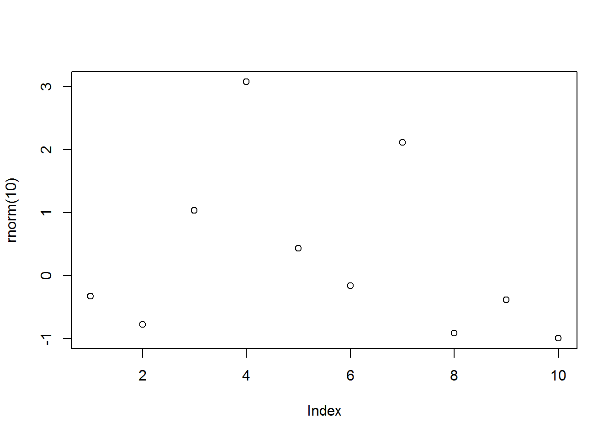
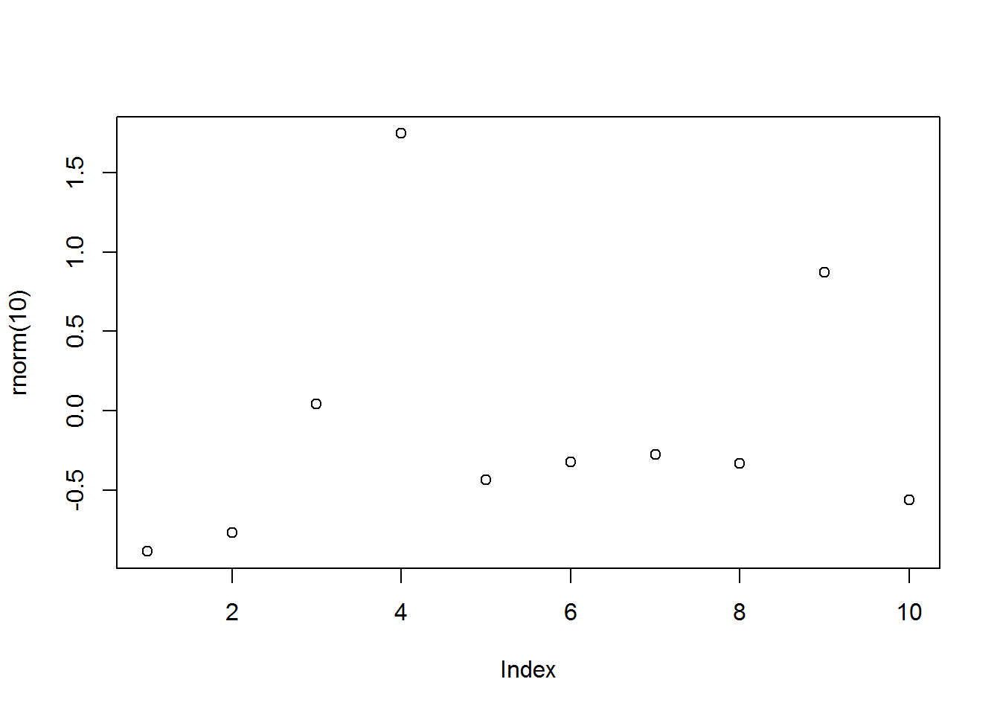
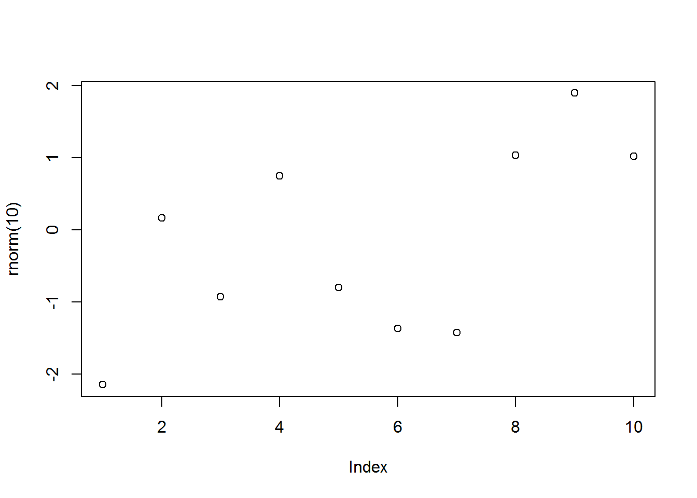

RMarkdown Cookbook
2020-01-28
- 使用 RMarkdown 的
child参数，进行文档拼接。 - 这样拼接以后的笔记方便复习。
- 相关问题提交到 Issue
1 Fenced code blocks
参考 https://github.com/carwin/markdown-styleguide
```
- This list item contains a fenced code block.
- Let's show how it might interact with a list.
```
.code-example {
property: value;
}
```
There is a newline above this paragraph because it is both the end of a
list and because it follows a fenced code block.
```2 嵌套引用
要注意缩进。
```
```
```
1
```
```
```
Figure 2.1: 否则 RStudio IDE 会错误识别。
第二种方法
## ```{r echo=FALSE, results='asis'}
## gluedown::md_fence(
## "```{r out.width=c('25%', '25%', '25%', '25%'), fig.show='hold'}
## library(magrittr)
## boxplot(1:10)
## plot(rnorm(10))
## plot(rnorm(10))
## plot(rnorm(10))
## ```", char = "~", info = "")
## ```


5 HTML Tips
5.1 Skip a line
A first sentence
<br><br><br><br>
A seconde sentenceA first sentence
A seconde sentence
5.2 Center an image
<center>

</center>只需要略懂<>标记语言。
5.3 White space around img

fig.asp=5 还不懂。
5.5 figures in columns
```{r out.width=c('25%', '25%', '25%', '25%'), fig.show='hold'}
library(magrittr)
boxplot(1:10)
plot(rnorm(10))
plot(rnorm(10))
plot(rnorm(10))
```
5.6 Several columns
Since R Markdown use the bootstrap framework under the hood. It is possible to benefit its powerful grid system. Basically, you can consider that your row is divided in 12 subunits of same width. You can then choose to use only a few of this subunits.
Here, I use 3 subunits of size 4 (4x3=12). The last column is used for a plot. You can read more about the grid system here. I got this result showing the following code in my R Markdown document.
{r, message=FALSE, echo=FALSE} ggplot( mtcars, aes(x=mpg)) + geom_histogram(fill="skyblue", alpha=0.5) + theme_minimal()
<div class = "row">
<div class = "col-md-4">
<br><br>Since R Markdown use the [bootstrap framework](https://getbootstrap.com/docs/4.0/layout/grid/) under the hood. It is possible to benefit its powerful grid system. Basically, you can consider that your row is divided in 12 subunits of same width. You can then choose to use only a few of this subunits.
</div>
<div class = "col-md-4">
<br><br>Here, I use 3 subunits of size 4 (4x3=12). The last column is used for a plot. You can read more about the grid system [here](bootstrap grid system). I got this result showing the following code in my R Markdown document.
</div>
<div class = "col-md-4">
``{r, message=FALSE, echo=FALSE}
ggplot( mtcars, aes(x=mpg)) + geom_histogram(fill="skyblue", alpha=0.5) + theme_minimal()
``
</div>
</div>5.7 Hide code
output:
html_document:
code_folding: "hide"这算是给一个选择。
5.8 Internal link
5.9 Compile in a website
_site.yml 其中的文字
name: "my-website"
navbar:
title: "My Website"
left:
- text: "Home"
href: index.html
- text: "About"
href: about.html通过
很快的建立了 有nav bar 的网站，workflowr 也是在这个基础上发展的。